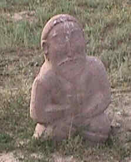

|  | Древнетюркское надгробие, ок. 500 г. н.э. близи Узгена (Киргизстан, Ферганская долина), бывшей столицы державы Караханидов, доминировавшей в Центральной Азии (999-1068). |
Лев Николаевич Гумилёв
"Тысячелетие вокруг Каспия"
Историко-этнологическое исследование ойкумены Евразии за 1500 лет - с III в. до н.э. по ХII в. н.э.
 Глава I. КЛЮЧ К РЕШЕНИЮ
ПОСТАВЛЕННОЙ ЗАДАЧИ
Глава I. КЛЮЧ К РЕШЕНИЮ
ПОСТАВЛЕННОЙ ЗАДАЧИ 
 1. География
поведения
1. География
поведения - 2. Кривая
этногенеза
- 3. История и
этнология
- 4. Неудовлетворенность
- 5. Практический
смысл этнологии
- 6. Физический
смысл этногенеза
- 7. Уровни
исследования и масштабы
- 8. Разочарование
- 9. Слово об
утратах
- 10.Биполярность
этносферы
- 11.Место
человека в этногенезе
- Глава II. ОБРАЗ ОЙКУМЕНЫ
- 12. Между двух
океанов
- 13. Почему
китайцы не проникли в Европу?
- 14. Туран и Иран
- 15. Между Ираном
и Китаем
- 16. Глухой угол
- 17. Окоем
- Глава III. В АРЕАЛЕ ПЫЛАЮЩЕЙ
ПАССИОНАРНОСТИ
- 18. Великая
степь Евразийского континента
- 19. Монголия до
хуннов
- 20. Хунну
и фаза подъема кочевого мира
- 21. Хунны разных
сортов
- 22. Больные
вопросы
- 23. Помехи
- 24. Фаза надлома
и конец восточных хуннов
- 25. Без родины и
отечества
- ГЛАВА IV. В АРЕАЛЕ ЭТНИЧЕСКИХ
СМЕЩЕНИЙ
- 26. Поиск начала
эпохи
- 27. Загадка и
задача
- 28. Встречи
- 29. Свободное
место
- 30. Великая
пустыня и север
- 31. Великая
пустыня и юго-запад
- 32. Великая
пустыня и юг
- 33. Цивилизация
II-IV вв
- 34. Варварство
II-IV вв
- 35. Каины и
Авели
- 36. Диалог об
этнографии, древней и новой
- 37. Смена цвета
времени
- 38. Как добыть
достоверную информацию
- 39. Олень, или
непредвиденная победа
- 40. Аттила,
Аэций и фазы этногенеза
- 41. Война 450-472
гг. и этногенез
- 42. Три
поражения
- 43. Катастрофа
- Глава V. В АРЕАЛЕ ЗАТУХАЮЩЕЙ
ПАССИОНАРНОСТИ
- 44. Между
историческими и природными закономерностями
- 45. Алтайское
укрытие
- 46. Инерционная
фаза - тюркский "Вечный эль"
- 47. Тюркюты и
хазары
- 48. Обновленный
Китай -династия Тан
- 49. Конец
тюркютов
- 50. Авары
истинные и ложные
- Глава VI. В АРЕАЛЕ ОСТЫВАЮЩЕЙ
ПАССИОНАРНОСТИ
- 51. Уйгуры
- 52. Фаза
обскурации - уйгурское ханство
- 53. Логика
жизнеотрицания
- 54. Последствия
соблазна
- 55. Последние
хунны
- 56. Последние
сяньбийцы
- 57. Несовместимость
- Глава VII. НА ИЗЛЕТЕ
- 58. Фаза и
состояние
- 59. Персистенты
- 60. Позабытый
этнос
- 61. Началось с
трагедии
- 62. Опыт
осмысления
- 63. Гузы и
печенеги
- 64. Куда
девались гузы?
- 65. "Куманы,
иже рекомые половцы"
- Глава VIII. НА ЧУЖБИНЕ
- 66. После конца:
этнические осколки
- 67. "Мир
ислама"
- 68. Египет и
тюрки
- 69. Химера на
Ниле
- 70. Надлом в
"мире ислама"
- 71. Химера на
Джейхуне
- 72. Халифат и
химеры
- 73. Этнос и
химеры
- Глава IX. БОГАТЫРИ, РЫЦАРИ И
УБИЙЦЫ
- 74. "Христианский
мир" (Chretiente)
- 75. Пассионарный
перегрев
- 76. Деяния
куманов и сельджуков
- 77. Конец эпохи
- 78. Обновление
этнической истории
- Глава X. ХРОНОСОФИЯ
- 79. Легенда к
синхронистической таблице
- 80. Синхронистические
таблицы
- 81. Диахрония
как принцип
- 82. Диахронические
таблицы этногенеза. Легенда
- Глава XI. МИФ И
ДЕЙСТВИТЕЛЬНОСТЬ
- 83. Память и
истина
- 84. Друзья и
недруги Великой степи
- 85. Неполноценных
этносов нет!
- 86. Миф против
науки
- Написана в 1984 г., опубликовано // Звезда, 2006, ╧ 11, С. ???-???.
Подготовка электронного текста книги завершена в июле 2000 г. благодаря Марине Климовой (ООО "ФАКЕЛ").